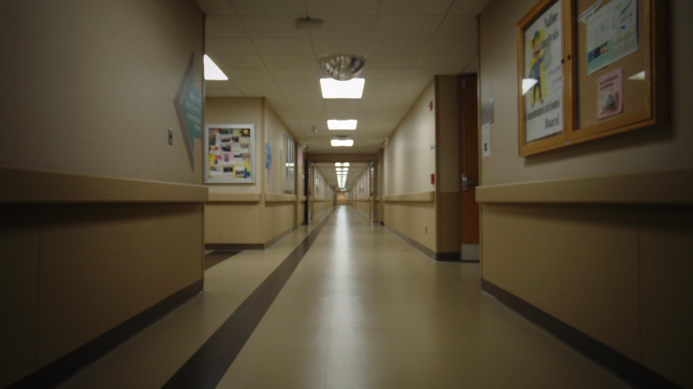
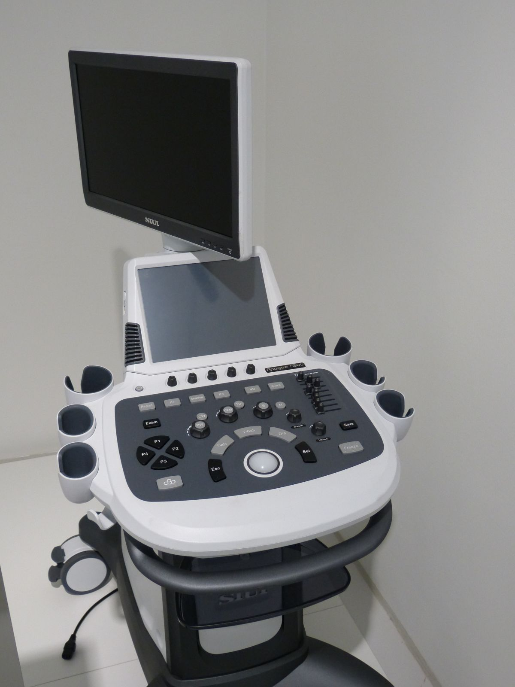
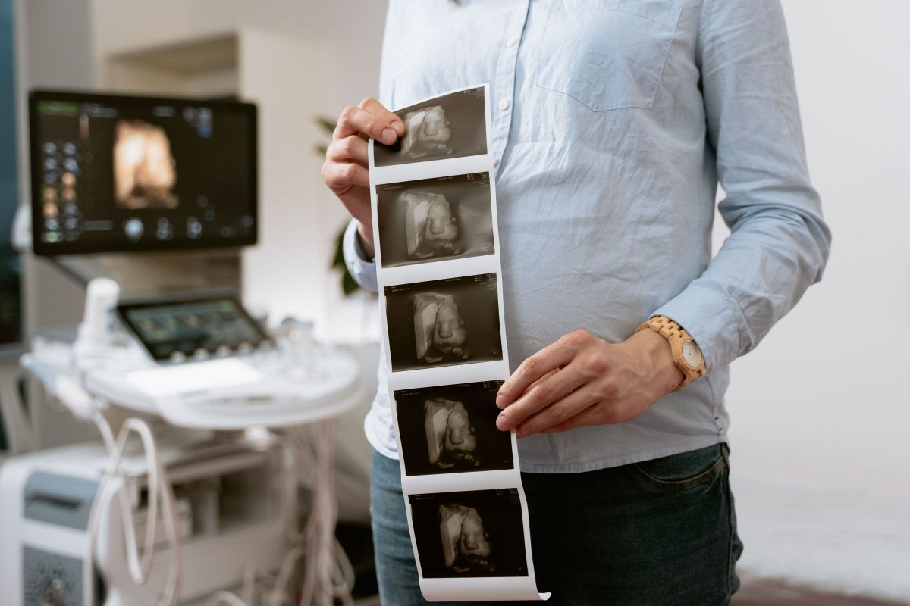
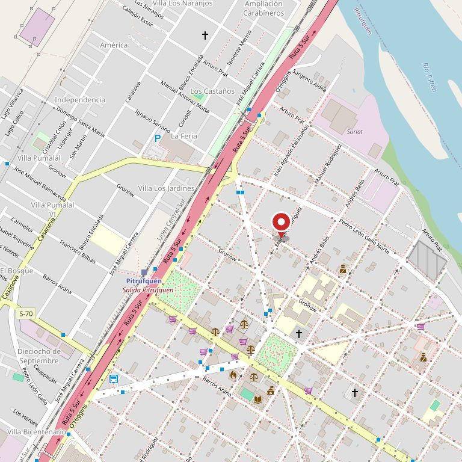

01
Consulta médica
Atención médica ambulatoria. El detalle de especialidades y qué días atiende cada profesional lo define el centro.
Pitrufquén · Manuel Rodríguez 680
Centro médico y ecografías. Cada examen se prepara distinto, y llegar mal preparado significa volver otro día.
01 — Lo que nadie alcanza a explicar por teléfono
La mayoría de las horas perdidas en un centro de imágenes no son por atrasos: son porque el paciente llegó sin la preparación que ese examen necesitaba. Cada una es distinta, y casi nadie lo sabe hasta que llega. Abra la suya.
Lo habitual es llegar en ayuno de varias horas, sin comer ni tomar líquidos con gas. También se pide no fumar ni mascar chicle antes: los dos hacen tragar aire, y el aire en el intestino tapa justamente lo que hay que mirar.
Cuántas horas exactas de ayuno lo indica el centro al dar la hora. Si toma medicamentos, pregunte si los suspende o no — eso no se decide por internet.
Al revés que la abdominal: acá hay que llegar con la vejiga llena. Se toma agua un rato antes y no se orina hasta después del examen. La vejiga llena hace de ventana y sin ella no se ve.
Cuánta agua y con cuánta anticipación lo indica el centro. Es incómodo, pero es lo que hace que el examen sirva.
Misma preparación que la pelviana: vejiga llena. En algunos casos se pide además ayuno liviano.
No necesita ayuno. Lo que sí: llegar sin desodorante, talco ni cremas en la zona, porque interfieren. Conviene ropa de dos piezas para no desvestirse entera.
Si tiene exámenes anteriores, tráigalos. Comparar con lo previo es la mitad del valor del examen.
La preparación cambia según la etapa del embarazo. En las primeras semanas suele pedirse vejiga llena; más adelante, generalmente no.
Al pedir la hora, diga de cuántas semanas está: con ese dato le indican exactamente qué hacer.
No requieren ayuno ni vejiga llena. Se llega y se hace.
Esto es orientación general sobre la preparación de exámenes de imagen, no indicación médica. Las horas exactas de ayuno, la cantidad de agua y qué hacer con sus medicamentos los indica el centro al darle la hora, y su médico. Ante cualquier diferencia, mande lo que le digan ellos.
Un examen bien preparado
se hace una sola vez.
02 — Qué se hace acá
01
Atención médica ambulatoria. El detalle de especialidades y qué días atiende cada profesional lo define el centro.
02
Es lo que le da el nombre al centro y lo que más se busca: tener dónde hacerse una ecografía sin viajar a Temuco.
Descripción general: la ficha de Google no publica el listado de servicios ni de especialidades. Lo que sí está confirmado es el nombre —consulta médica y ecografías— y la dirección. Nada más se inventó.

Por qué importa que esté acá
Una ecografía en Pitrufquén
son dos horas menos de viaje.
03 — Antes de venir
Las tres se responden en la misma llamada en que pide la hora, y evitan el noventa por ciento de los problemas.
04 — El centro


05 — Contacto
Al llamar, diga qué examen le pidieron: con eso le indican la preparación exacta y no pierde el viaje.

Para el equipo del Centro Médico MC
Primero, el dominio. Mientras centrosaludmc.cl esté libre, cualquiera lo puede inscribir: otro centro médico, un revendedor, o alguien que quiera aprovechar el nombre. Recuperarlo cuesta muy poco hoy y puede ser imposible mañana. Eso hay que hacerlo aunque esta demo no les guste.
Segundo, el enlace roto. Hoy la ficha de Google manda a una dirección que no existe. Para quien busca, eso se lee como que el centro cerró.